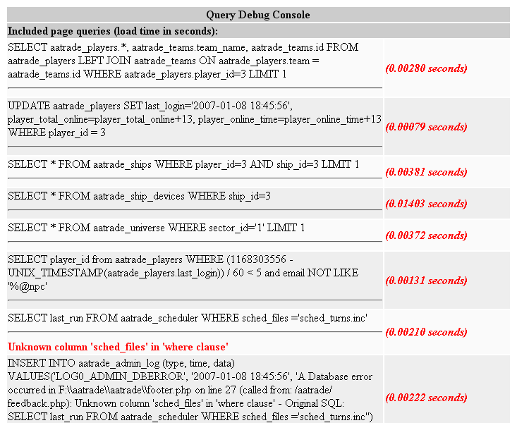

|
 ADOdb Lite Debug Console ADOdb Lite Debug Console
I decided to add a simple debug console to ADOdb Lite similar to the one used in Template Lite. This debug console can keep track of every query that has been made since the database object has been created for a particular page. It will also keep track of the execution times for each query along with any error messages.

The console is enabled using...
$db->debug_console = true;
|
and should be placed right after
$db = ADONewConnection( $db_type);
|
ADOdb Lite will start recording all of the queries made from the point the debug console was enabled. You can then retrieve three different arrays that contain all of the query information.
$db->query_list // List of all executed queries
$db->query_list_time // List of all executed queries execution times
$db->query_list_errors // List of all executed queries errors
|
These arrays are all numerically indexed starting from 0.
You can use the provided PHP INCLUDE file to display the Query Debug Console in a seperate window.
include ("adodb_lite/query_debug_console/query_debug_console.php");
display_query_console($db);
|
Place the above line at the bottom of your PHP code. It must be placed BEFORE the ending </body></html> tags. If it is placed after the ending </html> tag has been sent then the console may not be displayed. You must pass the ADOdb Lite database object to the display_query_console function.
Your browser must have Javascript enabled.
When the debug console is enabled the page will open another window displaying all of the query information.

Click Image to see full size.
|
Each query is listed along with the number of seconds it took to execute the query. If there was an error with the query it would be displayed in RED below the query.
If you are using Template Lite or Smarty you can add the following to your PHP program just before the display method.
$template_object->assign("debug_console", $db->debug_console);
$template_object->assign("query_list", $db->query_list);
$template_object->assign("query_list_time", $db->query_list_time);
$template_object->assign("query_list_errors", $db->query_list_errors);
|
At the end of your template file add the following code.
{if $debug_console == true }
<SCRIPT language=javascript>
_query_debug_console = window.open("","Query Debug","width=750,height=600,resizable,scrollbars=yes");
_query_debug_console.document.write("<HTML><TITLE>Query Debug Console</TITLE><BODY onload='self.focus();' bgcolor=#ffffff>");
_query_debug_console.document.write("<table border=0 width=100%>");
_query_debug_console.document.write("<tr bgcolor=#cccccc> <th colspan=2>Query Debug Console</th></tr>");
_query_debug_console.document.write("<tr bgcolor=#cccccc><td colspan=2><b>Included page queries (load time in seconds):</b></td></tr>");
{foreach key=key value=sql from=$query_list}
_query_debug_console.document.write("<tr bgcolor={if $key % 2}#eeeeee{else}#fafafa{/if}>");
_query_debug_console.document.write('<td width="75%">{$query_list[$key]|strip|addslashes }<hr><font color=\"red\"><b>{$query_list_errors[$key]|strip|addslashes}</b></font> </td>');
_query_debug_console.document.write("<td width=\"25%\"><font color=\"red\"><b><i>({$query_list_time[$key]|string_format:"%.5f"} seconds)</i></b></font></td></tr>");
{/foreach}
_query_debug_console.document.write("</table>");
_query_debug_console.document.write("</BODY></HTML>");
_query_debug_console.document.close();
</SCRIPT>
{/if}
|
This is not as comprehensive as the Performance Monitor but it is just as useful with only about 10 lines of code added to each of the drivers in ADOdb Lite. For such a small addition it is very useful in tracking down slow queries in any database.
|